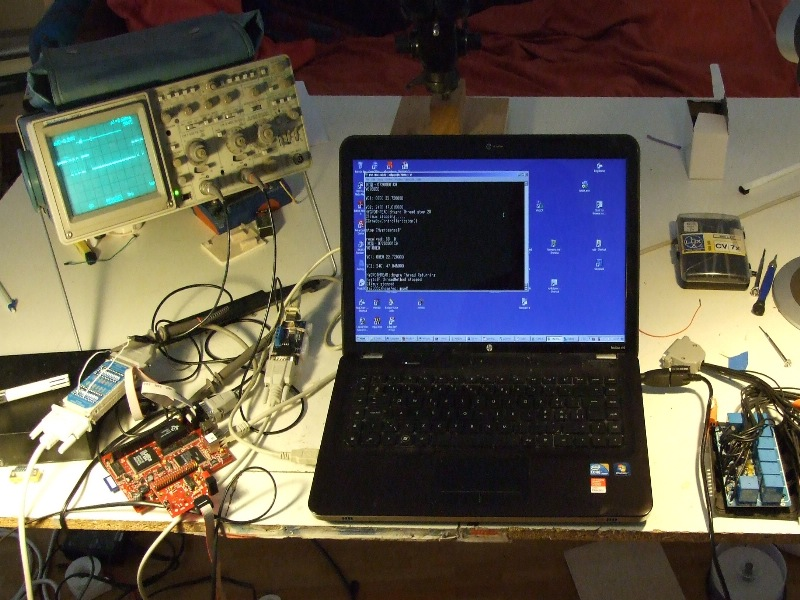
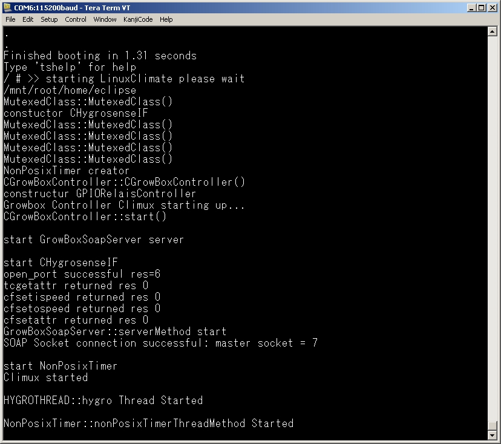
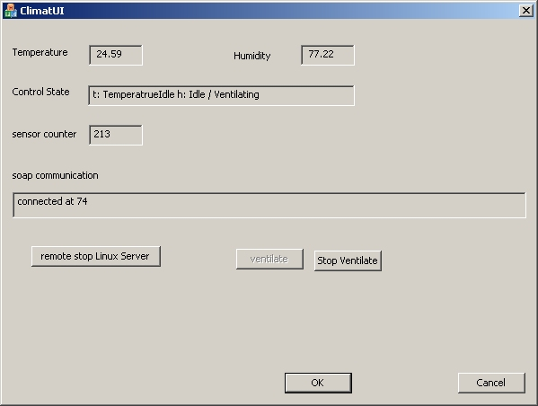

I took over the whole growbox application, commented out all the interfaces to the OS and could easily compile and link it. Also I could let it run on the Technical Solution's linux board under debian linux. It was just printing out a "Hello world" message, but for a first test I was rather satisfied. In the last few days I implemented the OS threading-interface of the serial message receiver thread (not yet the com interface), exchanging the windows-thread methods with posix threads, what was rather straight-forward. By today, I could compile and link the posix thread calls. Test will follow tomorrow or on monday.
23. sept 12: threading tests ran ok and I started work on the serial communication
26. sept 12: picture of working place during serial comms test

on the very right, the white stick on the black box is the upper part of the hygrosense temperature/humidity sensor, that sends its values via serial communication to the embedded linux board (at the left side of the notebook). The serial sgnal can also be seen on the oscilloscope who's probes are connected on the serial tester (between the linux board and the hygrosense sensor). On the notebook screen one can see an ssh terminal (connected via ip) showing the sensor values arriving on the linux board. On the right side of the hotebook lies the not yet connected relais board which later will control the humidity/drying and heating/cooling equipments.
27. sept 12: today the serial communication was tested ok. So as next I will work on the ini-file integration, using a simple library for embedded systems I found today on the internet ( http://www.compuphase.com/minini.htm ).
28. sept 12: ini file methods tested ok, and meanwhile also NonPosixTimers are ready for testing. I could not use the posix timers, because I could not find anywhere on the delivered IDE-CD a lib file that supported the posix timer methods. There is a chaotic amount of lib files, and versions of them.... It is hard to work with this IDE and one can see, that it was not used so often by developers. But anyhow, I will try to continue with the delivered development toolchains and IDE with the goal to come to a working application as soon as possible. When once the application runs, I then will try to compile a library on my own and to integrate all the needed methods, but for now this would consume too much time and delay the solution for too long ("time to market :-) .
30. Sept 12: over the weekend I worked on the soap integration ( http://www.cs.fsu.edu/~engelen/soap.html ) using gsoap with wich I made best experiences in the past (Siemens TTS). A first soap implementation is compilable and ready to test. Also GPIO (general purpose input/output {programming the signals of single pins on the chip}) controlling the relais-board is ready for testing. So now, to a big part, the implementation of the whole application is done, and mainly testing will follow, as well as web-UI integration.
13. Okt 12: after two weeks holiday with my family in Italy, where I just did some works on the embedded linux software and also created a gsoap client application, now testing continues: Today I tested NonPosixTimers with success.
19. Oct 12: GPIO tested ok. I took a small movie:
25. Oct 12: today I changed the startup-scripts, so that LinuxClimate application gets started automatically after power-on or reset. The application runs within TS-Linux, a much tiny and small real-time capable embedded linux kernel. It takes about 5 seconds after switch-on for the application to get up and running. The stdout output of the application is currently being written into system console.
console output:

I took a screen capture of the gsoap remote UI:

10. Jan 2013: during December, I did extensive tests with the application. It worked rather well except that the board itself does not work on a stable level. It is simply low quality, that crashed during tests with any configuration of loaded program components (eg. fsm-implementation, Soapserver, hygrosense interface, console logger....). When it crashed, most often the os just was blocked completely, what makes debugging difficult. Sometimes also it reset itself. Sometimes it worked 4 hours before crashing, next time it stopped working already after 5 minutes ....just randomly. It was an awful testing.
As consequence I ordered today a very much proven AT91SAM9M10-EKES from one of my favorite mcu manufacturer ATMEL. I plan to use qnx to compile my application and test it on this board.
25. Feb 2013: five days ago I started working with qnx on a AT91SAM9M10-ek board. QNX is simply great, so far works without problems and everything one need to know is well documented. Now I will start transferring my LinuxClimate application to qnx.
3. Mar 2013: after a few hours of reading qnx docus, and after successful fights against the qnx compiler and linker, who sometimes loose references to methods (google confirmed me that I was not the first with this problem) - finally - at the end, I was surprisingly astonished how good remote debugging and running the code on the AT91SAM9M10-EK worked -- just state of the art ! By now, I already tested the main-thread and all the gsoap remote UI-code, and all this worked perfectly well.